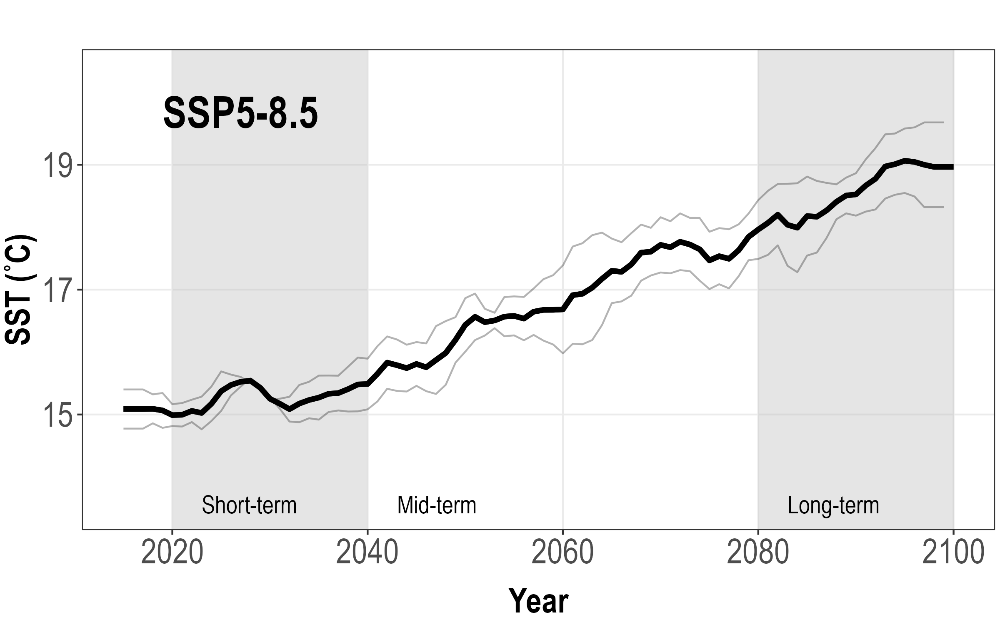
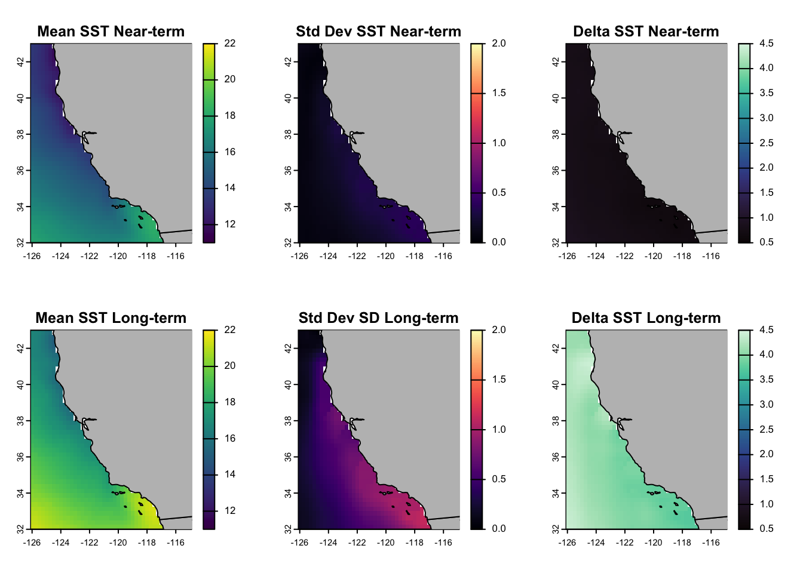

Time to make some projections! We will make projections on two IPCC AR6 time periods: near-term (2020-2040) and long-term (2080-2100).
Note - In general, ESMs (which are externally forced) can’t really be used for short-term forecasts (such as a projection for one year in the future). Here, we show you how to create projections anyway, and you can amend to a time period of interest for your own work.
7.1 Time series
We are going to create two time series of temperature from 2015 to 2100, for the entire California Current region - one for each SSP.
7.1.1 Create yearly averages of temperature
Because we are interested in the long-term trend of temperature out to 2100, we are going to average our temperature values across each year, and, apply a five-year moving window to smooth out any year-to-year variability.
Code
models =c("ACCESS-CM2|IPSL-CM6A-LR")models2 =c("ACCESS-CM2", "IPSL-CM6A-LR")indir_proj <-paste0(pth, "/__data/bias_correct/esm/_4_bias_corrected")outdir <-"__data/timeseries"# Projections -------------------------------------------------------------timeseries_ssp <-function(ssp) { allfiles_proj <-list.files(indir_proj, pattern = models, full.names = T) allfiles_proj2 <- allfiles_proj[grep(ssp, allfiles_proj)] rr <-rast(allfiles_proj2) rr <- rr[[time(rr) <"2100-12-31"]] #Only data until 2100 dateys <-time(rr) %>% unique years <- lubridate::year(dateys) %>% unique #get years emplist <-list() emplist_allmodels <-list()### Ensemble meanfor (i in1:length(years)) { alldates <- dateys[grep(years[i], dateys)] rasty <- rr[[time(rr) == alldates]] meanrast <-mean(rasty) # Average across the year meanval <-values(meanrast) %>%mean(na.rm=T) #Get average temp for California forlist <-data.frame(date = years[i], value = meanval) emplist[[i]] <- forlistprint(paste0("ens_", years[i])) }### Individual modelsfor (j in1:length(models2)) { emplist_indmodel <-list()for (h in1:(length(years)-1)) { modelrast <-rast(allfiles_proj2[grep(models2[j], allfiles_proj2)]) dateys <-time(modelrast) %>% unique alldates <- dateys[grep(years[h], dateys)] modelrast <- modelrast[[time(modelrast) == alldates]] meanrast <-mean(modelrast) meanval <-values(meanrast) %>%mean(na.rm=T) forlist <-data.frame(model = models2[j], date = years[h], value = meanval) emplist_indmodel[[h]] <- forlist } toadd <-do.call(rbind, emplist_indmodel) emplist_allmodels[[j]] <- toaddprint(models2[j]) }saveRDS(emplist, paste0("__data/timeseries/sst_year_proj_ens_", ssp, ".RDS"))saveRDS(emplist_allmodels,paste0("__data/timeseries/sst_year_proj_ind_", ssp, ".RDS"))}ssps <-c("ssp245", "ssp585")tic(); future_walk(ssps, timeseries_ssp); toc() #26 seconds for both
Jessie speed: ~26s
This results in two dataframes for each SSP: (i) one containing the ensemble mean of temperature for each year, and (ii) one containing the mean temperature across each model. For example…
date value
1 2015 14.43239
2 2016 14.81149
3 2017 14.88323
4 2018 14.71781
5 2019 14.66795
6 2020 14.94860
# For each ESM...ind <-readRDS("__data/timeseries/sst_year_proj_ind_ssp245.RDS")ind <-do.call (rbind, ind)head(ind)
model date value
1 ACCESS-CM2 2015 14.90912
2 ACCESS-CM2 2016 15.34836
3 ACCESS-CM2 2017 15.01041
4 ACCESS-CM2 2018 14.79648
5 ACCESS-CM2 2019 14.47969
6 ACCESS-CM2 2020 15.17875
Caution
Today, we’re using the ensemble mean. But in your own work, you may want to consider using the ensemble median instead. The median may be less impacted by outliers/extremes in the data, especially if you’re using ESMs that are known to be ‘too-hot’ in your region of interest.
7.1.2 Bind everything and apply 5-yr smooth
Here, we apply a 5 year smooth to our time series via the window_size argument in our smooth_esms() function. We do this to smooth out some inter-annual variability, as we’re interested in long-term trends.
This creates four objects in our global environment, which we will use to plot our time series: ssp_smoothed_ind_ssp245, ssp_smoothed_ind_ssp585, smooth_esm_ssp245 and smooth_esm_ssp585.
7.1.3 Plot!
Finally, the fun part.
Code
plot_ts <-function(ssp, sspletter) { smooth_esm <-get(paste0("smooth_esm_", ssp)) #relies on this being in global env ssp_smoothed_ind <-get(paste0("ssp_smoothed_ind_", ssp))# Make a kick-ass plot p1 <-ggplot() +geom_line(smooth_esm, mapping =aes(x = date, y = values), lwd =1.5) +geom_rect(data =data.frame(), mapping =aes(xmin =2020, xmax =2040, ymin =-Inf, ymax =Inf),fill ="grey",alpha =0.4) +geom_rect(data =data.frame(), mapping =aes(xmin =2080, xmax =2100, ymin =-Inf, ymax =Inf),fill ="grey", alpha =0.4) +geom_line(smooth_esm, mapping =aes(x = date, y = values), lwd =1.5) +geom_line(subset(ssp_smoothed_ind, model =="ACCESS-CM2"), mapping =aes(x = date, y = values), col ="black", alpha =0.3) +geom_line(subset(ssp_smoothed_ind, model =="IPSL-CM6A-LR"), mapping =aes(x = date, y = values), col ="black", alpha =0.3) +theme_bw() +scale_x_continuous(name ="Year", n.breaks =6) +scale_y_continuous(name ="SST (˚C)", limits =c(13.5, 20.5)) +theme(panel.grid.minor =element_blank(),plot.margin=unit(c(1,0.1,.1,0.1),"cm"),axis.title =element_text(size =20, family ="Arial Narrow",face ="bold"),axis.text =element_text(size =20, family ="Arial Narrow"),axis.title.x =element_text(margin =margin(t =10, r =-20))) +annotate("text", x =2019, y =20.1,label = sspletter, size =9, fontface ="bold", family ="Arial Narrow", hjust =0, vjust =1) +annotate("text", x =2083, y =13.7,label ="Long-term", size =5, family ="Arial Narrow", hjust =0, vjust =1) +annotate("text", x =2023, y =13.7,label ="Short-term", size =5, family ="Arial Narrow", hjust =0, vjust =1)ggsave(p1, filename =paste0(outdir, "/", ssp, "_SST_timeseries_1995-2100_11yrsmooth.png"),width =8, height =5)}# Run functiontic(); plot_ts("ssp245", sspletter ="SSP2-4.5"); toc() #Jessie: 0.197 secondsplot_ts("ssp585", sspletter ="SSP5-8.5")
This results in two plots: a time series of projected yearly averaged temperature from 2015-2100, for each climate scenario, for the entire California Current ecosystem. The bold black line represents the ensemble mean of the two ESMs, and the two grey lines represent the yearly means for each ESM, respectively, giving us an idea of potential model uncertainty.

7.2 Projections
Let’s make some maps.
7.2.1 Individual ESM projections
First, we create our projections for both ESMs, across the two time periods and SSPs, and save the outputs as .nc files. Our projections consist of SST averaged across each month within each time period, plus, the associated standard deviation of SST.
Code
models =c("ACCESS-CM2", "IPSL-CM6A-LR")ssps =c("ssp245", "ssp585")term =c("near", "long")outdir =paste0(pth, "/__data/projections")indir_proj <-paste0(pth, bc_pth, bc_pth_bc)termdf <-data.frame(timeperiod =c("near", "long"),st =c("2020-01-01", "2080-01-01"),fin =c("2040-01-01", "2100-01-01"))tic(); for (k in term) {for (i in ssps) {for (j in models) { allfiles_proj <-list.files(indir_proj, pattern = j, full.names = T) allfiles_proj <- allfiles_proj[grep(i, allfiles_proj)] allfiles_proj <- allfiles_proj[grep("2100", allfiles_proj)] rr <-rast(allfiles_proj)# subset to time period tp <-subset(termdf, timeperiod == k) rr <- rr[[time(rr) > tp[,"st"] &time(rr) < tp[,"fin"] ]]# Mean and SD proj_u <-mean(rr) proj_sd <-stdev(rr)# write to outdir filename_u <-paste0(outdir, "/ind/mean_", j, "_", i, "_", k, "_", "proj.nc" ) filename_sd <-paste0(outdir, "/ind/sd_", j, "_", i, "_", k, "_", "proj.nc" ) terra::writeCDF(proj_u, filename_u, overwrite = T) terra::writeCDF(proj_sd, filename_sd, overwrite = T) } }}; toc() #Jessie: 1.8 seconds
Now that we have our ensembled projections of SST, we want to inspect the delta difference, which is the difference between projected SSTs, and baseline/observed SST experienced between 1995-2014. Essentially, how much will SST change under projected future ocean conditions?
First, we create our historical average, from 1995-2014:
Code
#Ensemble average of 1995-2014 for both modelsbc_pth <-paste0(pth, "/__data/bias_correct/esm/_4_bias_corrected/")r1 <-rast(paste0(bc_pth, "tos_mo_ACCESS-CM2_1995-2014_bc_historical_remapped.nc"))r2 <-rast(paste0(bc_pth, "tos_mo_IPSL-CM6A-LR_1995-2014_bc_historical_remapped.nc"))rr <-c(r1, r2)mean_hist <-mean(rr)plot(mean_hist, main ="Ensembled SST 1995-2014"); maps::map("world", add = T)
Then, we subtract the baseline SST from our projections…
Code
ssps =c("ssp245", "ssp585")tic(); for (i in ssps) { near_mean <-rast(paste0(pth, "/__data/projections/ens/mean_ens_", i, "_near_proj.nc")) rr <- near_mean - mean_histwriteCDF(rr, paste0(outdir, "/delta/delta_mean_ens_near_", i, ".nc"),overwrite = T) long_mean <-rast(paste0(pth, "/__data/projections/ens/mean_ens_", i, "_long_proj.nc")) rr <- long_mean - mean_histwriteCDF(rr, paste0(outdir, "/delta/delta_mean_ens_long_", i, ".nc"),overwrite = T)}; toc()
Now, we plot. Top row = near-term projections (2020-2040) for SST (left), standard deviation of SST (mid) and delta difference (right). Bottom row = long-term projections (2080-2100).
7.2.5 Plot: SSP5-8.5
…And repeat for SSP5-8.5. In this scenario, we can see the ocean off California is projected to increase by ~1˚C in the near-term, and ~4.5˚C in the long-term, compared to baseline SST (note the increased uncertainty, particularly in SoCal).

Woohoo! We’ve made SST projections for the California region using an ensemble of two ESMs, across two time periods, and, for two climate scenarios. Now, we could use these projections for species distribution modelling, marine disease projections… the list is endless! Some useful summary papers that have used ESMs to assess the impact of climate on marine fauna include (Stock et al. 2011) and (Drenkard et al. 2021).
7.3 Uncertainty
We could dedicate an entire workshop to reviewing the different sources of uncertainty when working with ESMs, but we don’t have time!
Brodie, Stephanie, James A. Smith, Barbara A. Muhling, Lewis A. K. Barnett, Gemma Carroll, Paul Fiedler, Steven J. Bograd, et al. 2022. “Recommendations for Quantifying and Reducing Uncertainty in Climate Projections of Species Distributions.”Global Change Biology 28 (22): 6586–6601. https://doi.org/https://doi.org/10.1111/gcb.16371.
Cheung, William W. L., Thomas L. Frölicher, Rebecca G. Asch, Miranda C. Jones, Malin L. Pinsky, Gabriel Reygondeau, Keith B. Rodgers, et al. 2016. “Building Confidence in Projections of the Responses of Living Marine Resources to Climate Change.”ICES Journal of Marine Science 73 (5): 1283–96. https://doi.org/10.1093/icesjms/fsv250.
Drenkard, Elizabeth J, Charles Stock, Andrew C Ross, Keith W Dixon, Alistair Adcroft, Michael Alexander, Venkatramani Balaji, et al. 2021. “Next-Generation Regional Ocean Projections for Living Marine Resource Management in a Changing Climate.”ICES Journal of Marine Science 78 (6): 1969–87. https://doi.org/10.1093/icesjms/fsab100.
Morley, James W, Thomas L Frölicher, and Malin L Pinsky. 2020. “Characterizing Uncertainty in Climate Impact Projections: A Case Study with Seven Marine Species on the North American Continental Shelf.”ICES Journal of Marine Science 77 (6): 2118–33. https://doi.org/10.1093/icesjms/fsaa103.
Stock, Charles A., Michael A. Alexander, Nicholas A. Bond, Keith M. Brander, William W. L. Cheung, Enrique N. Curchitser, Thomas L. Delworth, et al. 2011. “On the Use of IPCC-Class Models to Assess the Impact of Climate on Living Marine Resources.”Progress in Oceanography 88 (1): 1–27. https://doi.org/https://doi.org/10.1016/j.pocean.2010.09.001.
Thuiller, Wilfried, Maya Guéguen, Julien Renaud, Dirk N. Karger, and Niklaus E. Zimmermann. 2019. “Uncertainty in Ensembles of Global Biodiversity Scenarios.”Nature Communications 10 (1): 1446. https://doi.org/10.1038/s41467-019-09519-w.